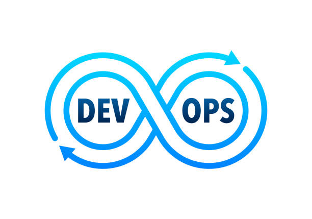
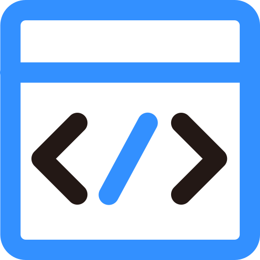
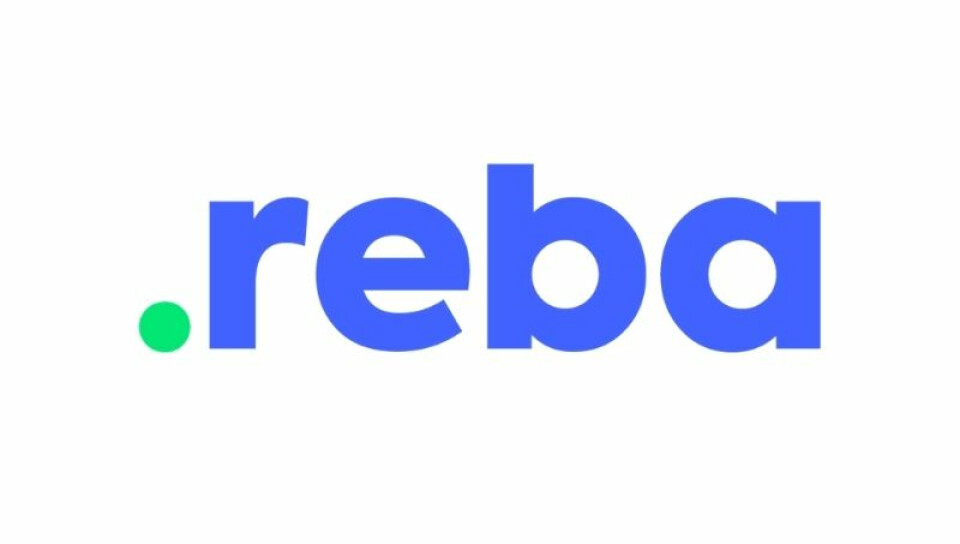
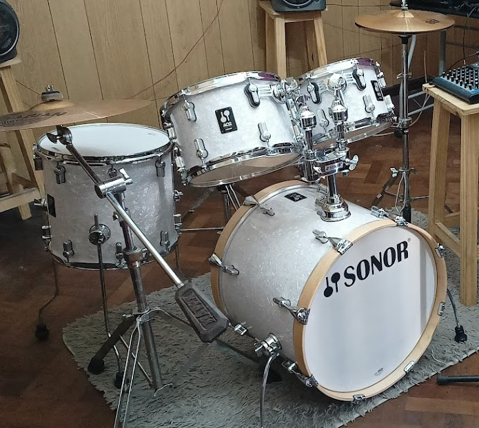
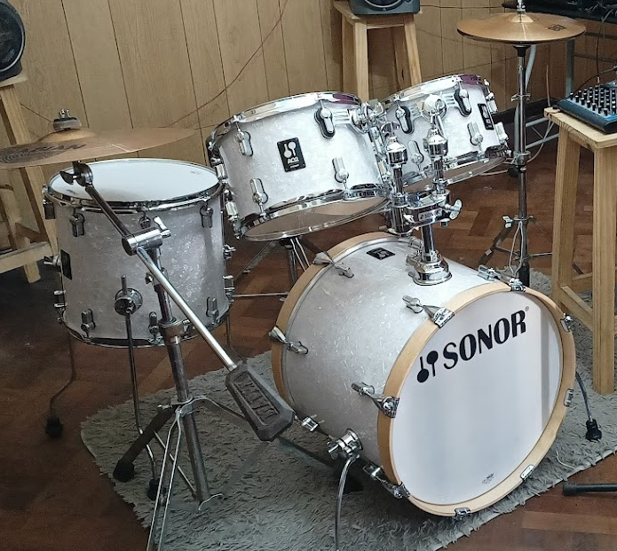

Sobre mí
Soy un ingeniero DevOps y especialista en infraestructura Cloud con una sólida trayectoria en la modernización de sistemas y la automatización de procesos. Mi experiencia abarca la administración de infraestructuras tradicionales y su posterior evolución hacia entornos cloud (AWS y GCP). Actualmente, estoy expandiendo mis conocimientos hacia el desarrollo web, con el objetivo de complementar mis habilidades y convertirme en un profesional full-stack capaz de construir soluciones completas, desde la infraestructura hasta la interfaz de usuario.
Proyectos
Proyecto 1: AutoDeploy Hub
Una plataforma web que simplifica el despliegue de aplicaciones para startups...
- Tecnologías Usadas: HTML, CSS, JavaScript, Python, GitLab CI, AWS, Terraform.
- Rol: Desarrollador y Arquitecto Principal.
Proyecto 2: CloudVista Monitor
Una herramienta de monitoreo y visualización de infraestructura en la nube...
- Tecnologías Usadas: Grafana, Prometheus, AWS, GCP, Kubernetes.
- Rol: Especialista en Monitoreo y DevOps.
Habilidades
-
 Cloud & DevOps
Amazon Web Services (AWS), Google Cloud Platform (GCP), Terraform, Terraspace, Kubernetes, Pipelines: GitLab CI, Herramientas de seguridad: Hashicorp Vault, Vault Webhook, External Secrets
-
 Scripting & Automatización
Bash, Python
-
Monitoreo de Infraestructura
Nagios, Zabbix, Grafana, New Relic
Experiencia
Líder DevOps en la industria financiera
Durante varios años, me desempeñé como líder DevOps en una compañía financiera reconocida en el sector de la banca digital.
Transformación y modernización de sistemas
- Conduje la arquitectura, despliegue y administración de sistemas cloud utilizando Terraform y Terraspace sobre AWS y GCP.
- Llevé a cabo transformaciones digitales, migrando sistemas tradicionales (VMs) a entornos cloud y rediseñando aplicaciones monolíticas a arquitecturas de microservicios.
Hobbies
Además de mi vida profesional, me dedico a actividades que potencian mi disciplina y creatividad.
 

- Natación: Soy un apasionado de la natación, disfrutando tanto de la competencia en estilo libre como de los desafíos únicos que ofrecen las aguas abiertas.
- Música: Me gusta el rock y toco la batería. La música es mi forma de desconectar y de ejercitar la creatividad.